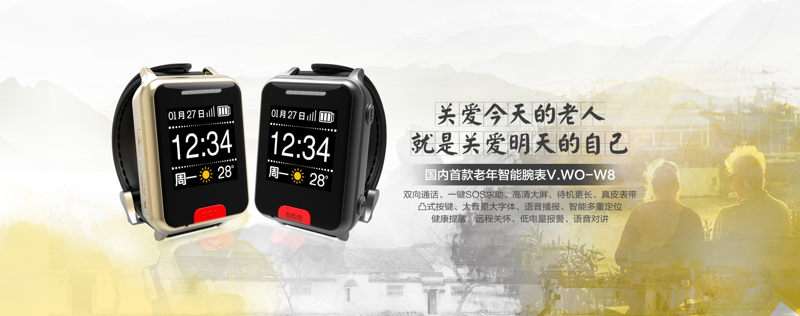

老年智能腕表W8
七大功能
114专线
独有114金色晚年专线专席服务平台，专为老人提供服务
双向通话
可实现对外拨打电话及接听来电
语音对讲
表与手机APP之间可进行远程语音聊天
智能定位
GPS+LBS室外室内精准双重定位，在手表开机状态下，手机APP能实时定位手表所在位置及行动轨迹。
行动监测
无论手表静止或运动状态下APP均能获取戴表者的实况数据，并向手机作出不同程度的报警式提示。
智能提醒
通过APP对手表的提醒功能进行远程设置，可对老人的起居、饮食、服药、运动作出准确的提醒。
SOS求助
当老人身体不适或遇紧急情况可长按“红色SOS”求救键呼叫预设好的求助对相，直到接通为止！